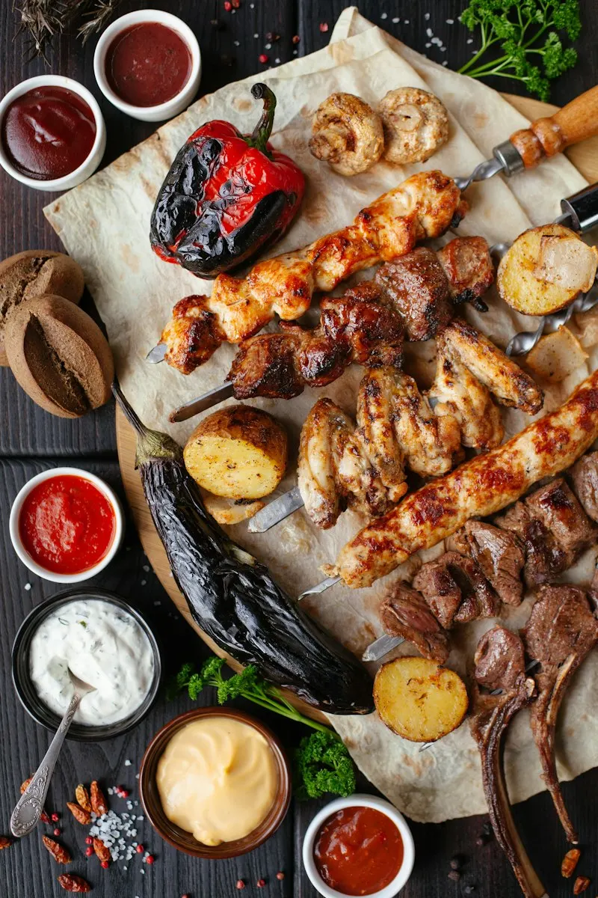
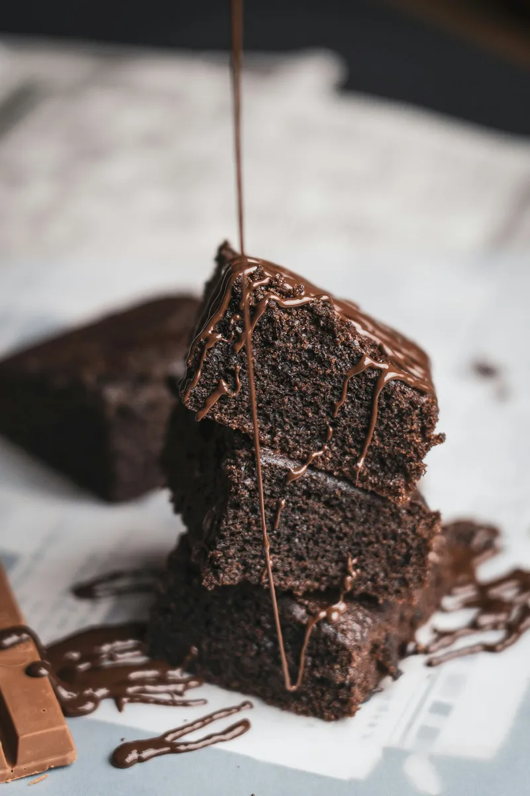
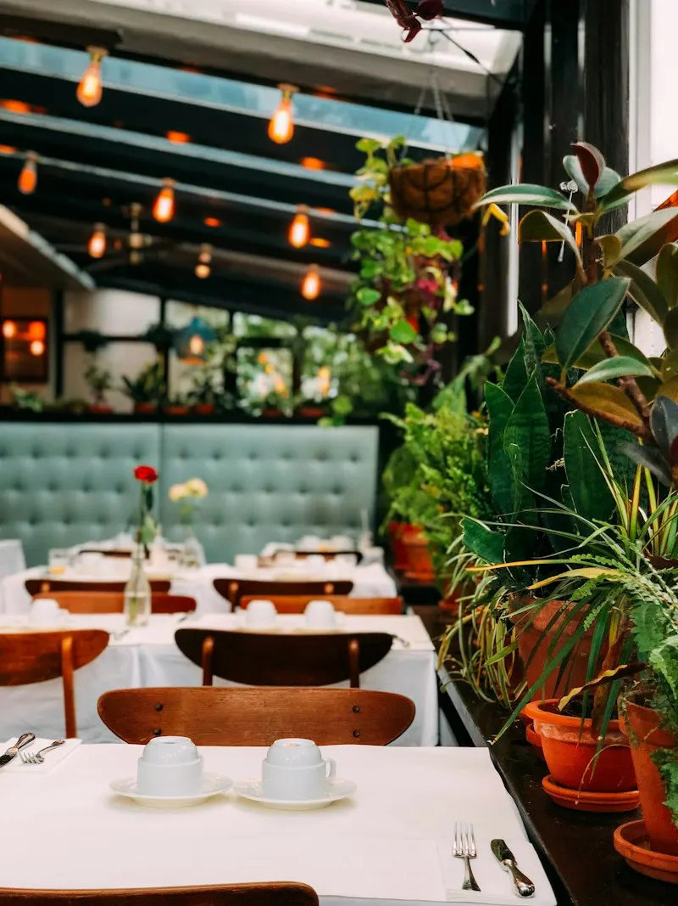
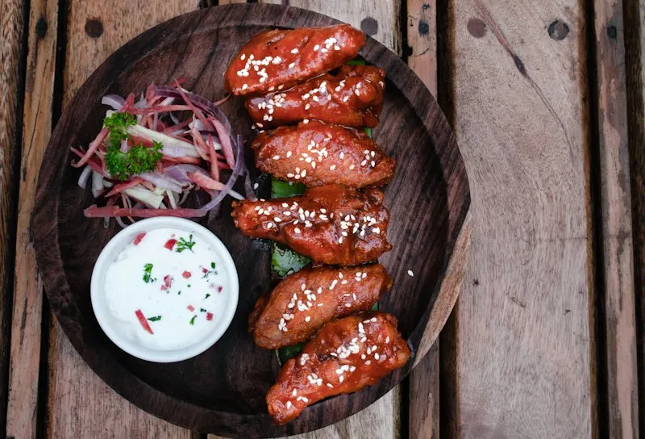
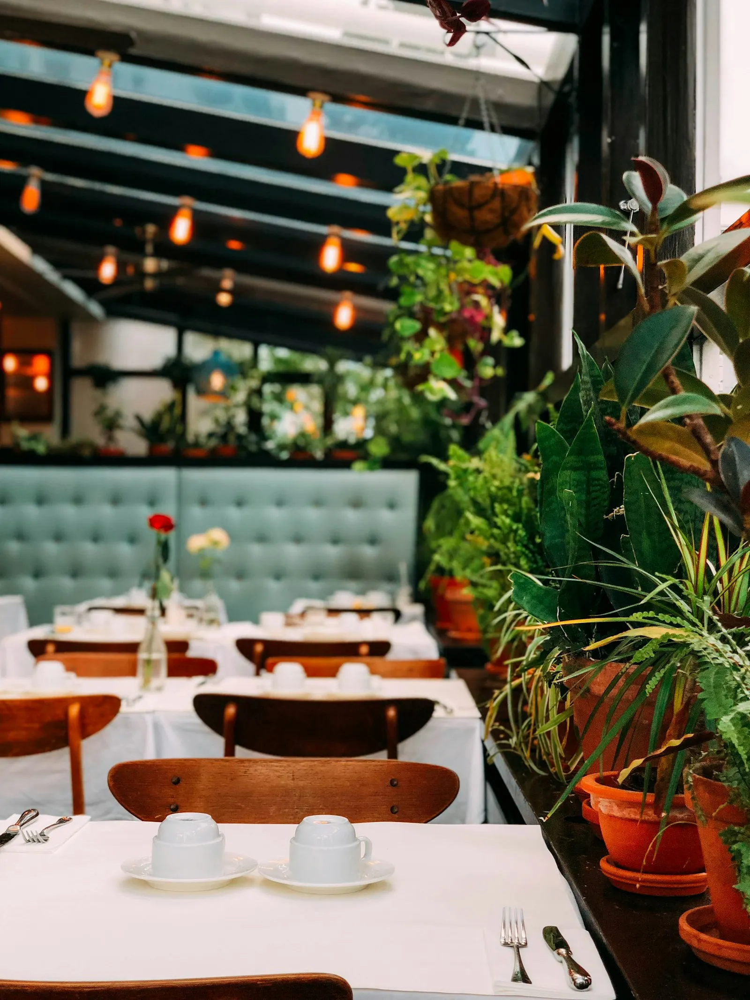
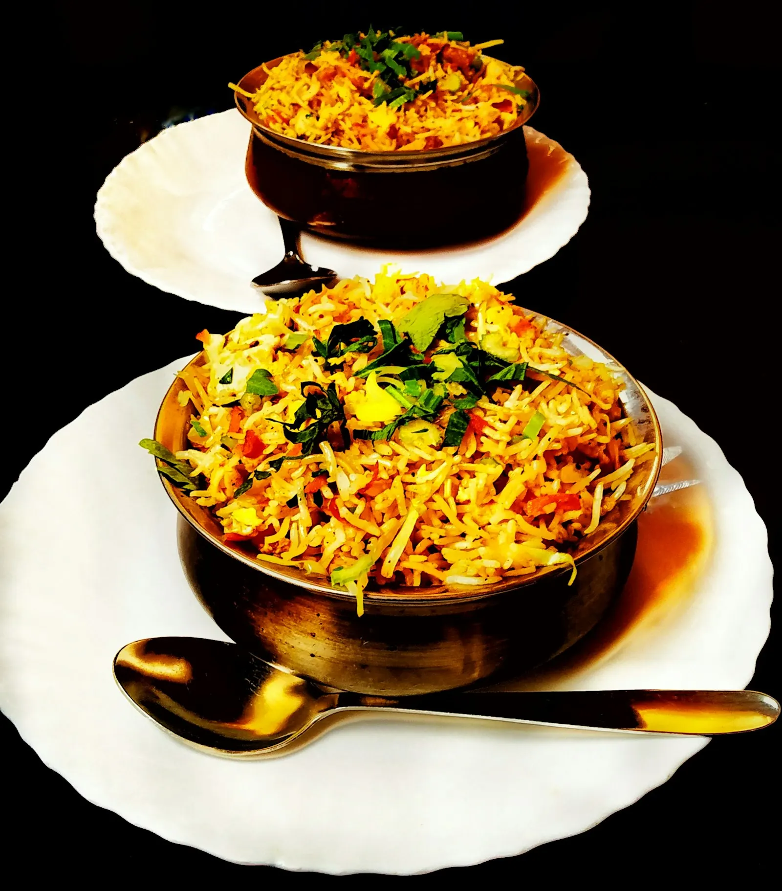

Dining
From biryani to steaks — a multi-cuisine menu built for big family tables and sharing platters.
Browse the menu →GRANDIOSE’ · THE FAMILY RESTAURANT
Biryani, karahi, steaks, BBQ and Italian pasta — one wide menu for the whole family, on Aziz Shaheed Road in Sialkot Cantt.
Open daily · 12:00 PM – 12:00 AM
Ways to enjoy Grandiose’
Dine in with the family, gather for an occasion, or take it home — the menu is wide enough that nobody at the table has to compromise.

From biryani to steaks — a multi-cuisine menu built for big family tables and sharing platters.
Browse the menu →
Birthdays, engagements and family occasions — book ahead and bring everyone.
Plan a gathering →
Quiet, comfortable family dining in the Cantt — the go-to spot for a relaxed family dinner.
Family dining →
Family
Grandiose’ is the go-to spot for Sialkot Cantt families who want a quiet, high-quality dinner together. The room is comfortable and unhurried, the menu is wide enough for grandparents and children to order happily at the same table, and the sharing platters are designed for exactly that — everyone reaching in together.


Events & gatherings
Birthdays, engagements, farewells and big family get-togethers — Grandiose’ is built for occasions when the guest list is long. Book ahead, tell us how many are coming, and the kitchen will plan sharing platters to suit the table.
Why locals choose Grandiose’
Drawn from what reviewers mention most about Grandiose’ The Family Restaurant.
The go-to spot in the Cantt for a comfortable, unhurried family meal — the room and the service are built around it.
Biryani, karahi and kebabs beside Italian pasta, steaks and burgers — a large group with different tastes eats happily at one table.
Diverse sharing platters designed for families — a generous way to feed a big table together.
The two dishes reviewers name again and again: seasoned steaks and a Chicken Handi counted among the city’s best.
Reviewers warn not to skip the dessert menu — it is worth leaving space for.
Gallery
A look at the plates that keep the Cantt coming back. Tap any photo to view it larger.
Find Us
Open daily
12:00 PM – 12:00 AM
Lunch through to a late-night dinner, every day of the week.
Good to know
Grandiose’ is open every day from 12:00 PM to 12:00 AM — lunch through to a late-night dinner.
Walk-ins are welcome, but for family gatherings and weekends it is best to call ahead on 052 4295999 so a table is ready for your group.
A wide multi-cuisine menu: Pakistani dishes such as biryani, karahi and kebabs, plus Chinese, Italian pasta, continental steaks, BBQ and fast food — and a dessert menu worth saving room for.
Yes — Grandiose’ is a family restaurant, known in the Cantt as a comfortable place for a family dinner, with a menu wide enough for every age at the table.
Yes — call 052 4295999 to order ahead and collect your food from the restaurant.
97 Aziz Shaheed Road, Sialkot Cantonment — on the main Cantt road. Use the Google Maps link above for directions.
Contact
Call ahead for a family table, a gathering, or a takeaway order — the kitchen is open from noon to midnight, every day.